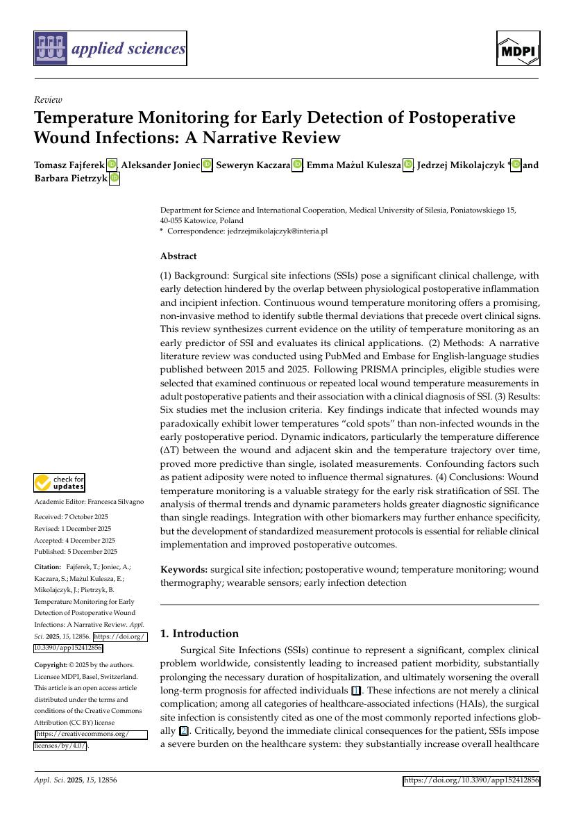

Week 2
Thermal Methods, Datasheets & Wound Biology
Week 2 translated the clinical literature into engineering requirements by comparing temperature measurement methods, sensor datasheets and wound healing mechanisms.
Open Week 2 Drive FolderTemperature measurement methods
Choosing a measurement approach for a smart dressing
The comparison work evaluated contact and non-contact temperature sensing options for wound monitoring. For a wearable patch, the selected method must be compact, low-power, accurate, repeatable and suitable for integration with a flexible substrate.
- Compared thermal sensors, infrared methods and digital temperature IC options.
- Reviewed TMP117 and STS3x datasheets for accuracy, interface and integration needs.
- Identified the importance of sensor placement and thermal isolation.
- Connected wound biology with the need for continuous or repeated monitoring.

Biological baseline
What must be monitored?
Hemostasis
Immediate clotting and biological scaffold formation after tissue injury.
Inflammation
Immune activity, heat, swelling and infection-related changes dominate this stage.
Proliferation
Fibroblasts, granulation tissue and epithelial migration support wound closure.
Remodeling
Collagen reorganization strengthens scar tissue over time.

Week 2 output
Sensor requirements became clearer
The project direction moved toward a contact-type digital temperature sensor inside a flexible patch. The temperature data must be collected with low self-heating, consistent contact and proper thermal protection from the external environment.